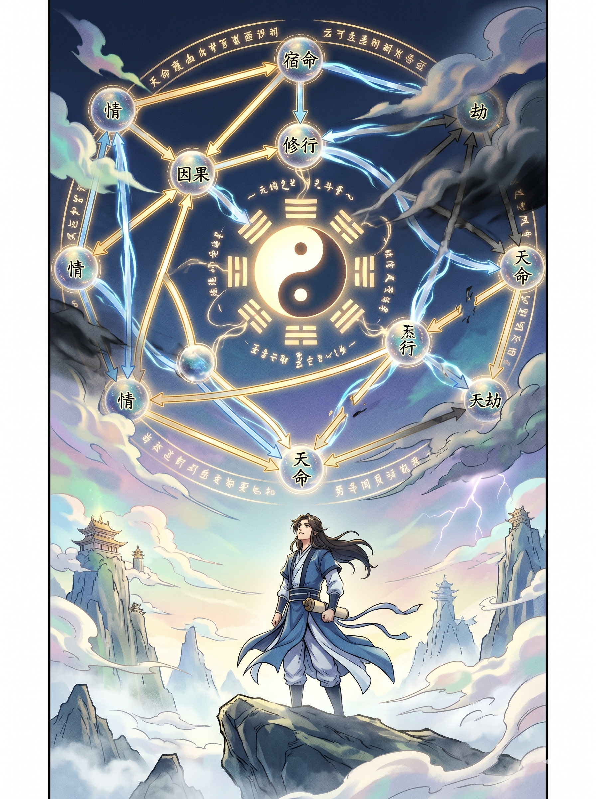
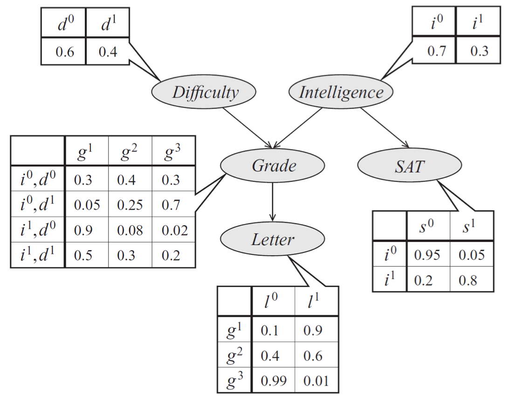
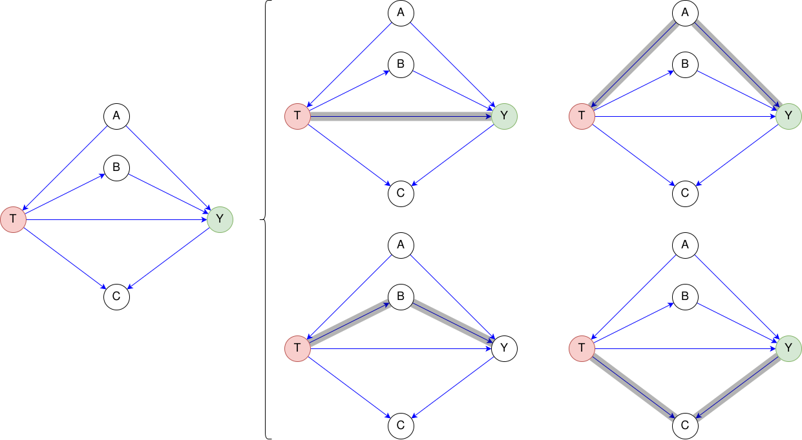
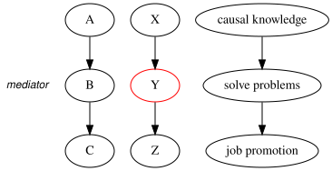
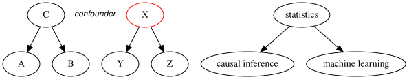
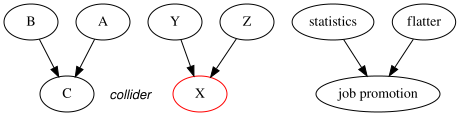
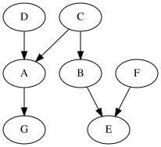

7 Mô hình đồ thị
Mô hình đồ thị (Graphical Models) cung cấp một ngôn ngữ hình thức để biểu diễn các mối quan hệ xác suất và nhân quả.

7.1 Mô hình đồ thị xác suất
Có 3 loại mô hình đồ thị xác suất khác nhau:
- Mạng Bayes (Bayesian Networks)
- Mạng Markov ngẫu nhiên (Markov Random Fields)
- Đồ thị nhân tử (Factor Graphs)
Dùng để thực hiện suy luận xác suất (probabilistic inference) với phân phối chung \(p(x_1, \dotsc, x_n)\).
Quy tắc tổng (sum rule): để tính xác suất biên của các biến.
\[p(x_i) = \sum_{x_1,\dots,x_{i-1},x_{i+1},\dots,x_n} p(x_1,\dots,x_n).\]
Quy tắc chuỗi (chain rule): để phân rã phân phối xác suất chung.
\[p(x_1, x_2, \dotsc, x_n) = p(x_1) p(x_2 \mid x_1) \cdots p(x_n \mid x_{n-1}, \dotsc, x_2, x_1).\]
Định nghĩa mạng Bayes
Mạng Bayes là một đồ thị DAG \(G = (V,E)\) với
- Mỗi đỉnh \(i \in V\) là một biến ngẫu nhiên \(x_i\) và có phân phối xác suất có điều kiện \(p(x_i \mid pa(x_i))\).
Mạng Bayes biểu diễn phân phối xác suất chung \(p(x_1, \dotsc, x_n)\)
\[p(x_1, x_2, \dotsc, x_n) = \prod_{i=1}^n p(x_i \mid pa(x_i)).\]
với \(pa(x_i)\) là tập hợp các nút cha của nó trên đồ thị \(G\).
Giả định Markov địa phương (Local Markov Assumption) phát biểu rằng, khi biết các cha của mình trong DAG, một nút \(X\) độc lập với tất cả các nút không phải hậu duệ (non-descendants) của nó. Điều này dẫn đến Phân rã mạng Bayesian (Bayesian Network Factorization):
\[p(x_1, \dots, x_n) = \prod_{i} p(x_i | pa(x_i))\]
Phân rã mạng Bayesian tương đương với giả định Markov địa phương.
Giả định tối thiểu (Minimality Assumption) thêm một ràng buộc để đảm bảo đồ thị là “tối thiểu”:
- Giả định Markov Địa phương: Mã hóa các tính độc lập.
- Phụ thuộc Kề nhau: Các nút kề nhau trong DAG phải phụ thuộc vào nhau.
Ví dụ
Hãy xem xét một mô hình về điểm số \(g\) của một sinh viên trong một kỳ thi. Điểm số này phụ thuộc vào độ khó \(d\) của kỳ thi và trí thông minh \(i\) của sinh viên; nó cũng ảnh hưởng đến chất lượng \(l\) của thư giới thiệu từ giáo sư dạy khóa học đó. Trí thông minh \(i\) của sinh viên cũng ảnh hưởng đến điểm SAT \(s\). Mỗi biến là nhị phân (binary), ngoại trừ \(g\) nhận 3 giá trị có thể có.

Phân phối xác suất kết hợp trên 5 biến này được phân rã nhân tử một cách tự nhiên như sau:
\[ p(l, g, i, d, s) = p(l \mid g)\, p(g \mid i, d)\, p(i)\, p(d)\, p(s \mid i). \]
7.2 Mô hình đồ thị nhân quả
Mô hình đồ thị cung cấp một ngôn ngữ minh bạch để truyền đạt và hoàn thiện các suy nghĩ về nhân quả.
Giả định Cạnh Nhân quả (Causal Edges Assumption): Trong một đồ thị có hướng, mọi nút cha là nguyên nhân trực tiếp của tất cả các nút con của nó. Cầu nối này cho phép chúng ta suy luận các phụ thuộc nhân quả (causal dependencies) từ cấu trúc đồ thị.
Trong một đồ thị, sự liên đới truyền qua hai loại đường đi (luồng chảy):
- Liên đới Nhân quả (Causal Association): Các đường đi theo hướng nhân quả
- Liên đới Phi nhân quả (Non-causal Association): Các đường đi không theo hướng nhân quả

Sự phụ thuộc luồng chảy (đường đi) qua các nút trong đồ thị giống như dòng nước chảy, và việc điều kiện hóa (conditioning) một số nút có thể ngăn chặn hoặc cho phép dòng chảy này.
Để hiểu rõ hơn sự phụ thuộc luồng chảy (đường đi) qua các nút trong đồ thị, chúng ta cần phân tích ba cấu trúc ba nút cơ bản.
Ba cấu trúc ba nút cơ bản
- Cấu trúc chuỗi (chain)

- Cấu trúc rẽ nhánh (fork)

- Cấu trúc V

Một đường đi bị chặn nếu nó chứa một biến không hội tụ được điều kiện hóa hoặc một biến hội tụ không được điều kiện hóa (mà không có hậu duệ nào được điều kiện hóa).

Các mô hình đồ thị giúp chẩn đoán và hiệu chỉnh chệch (bias) trong suy luận nhân quả.
✍ Luyện tập
Xác định các quan hệ nhân quả từ đồ thị Bayes

7.3 Quy trình phân tích nhân quả bằng mô hình đồ thị
Quy trình phân tích nhân quả bằng mô hình đồ thị bao gồm các bước sau:
- Định nghĩa các biến: Xác định các biến trong mô hình; \(T\), \(Y\), \(C\), …
- Xây dựng đồ thị: Dựa trên kiến thức chuyên môn để xây dựng đồ thị tương ứng với các biến. Quá trình sinh ra dữ liệu.
- Nhận diện:
- Biến gây nhiễu (confounders)
- Biến trung gian (mediators)
- Biến kiểm soát (controls) …
- Xác định các đường đi trong đồ thị để loại bỏ nhiễu (bias).
- Ước lượng: Ước lượng các tham số từ dữ liệu.
- Kiểm định: Kiểm định các giả định của mô hình và kết quả ước lượng.